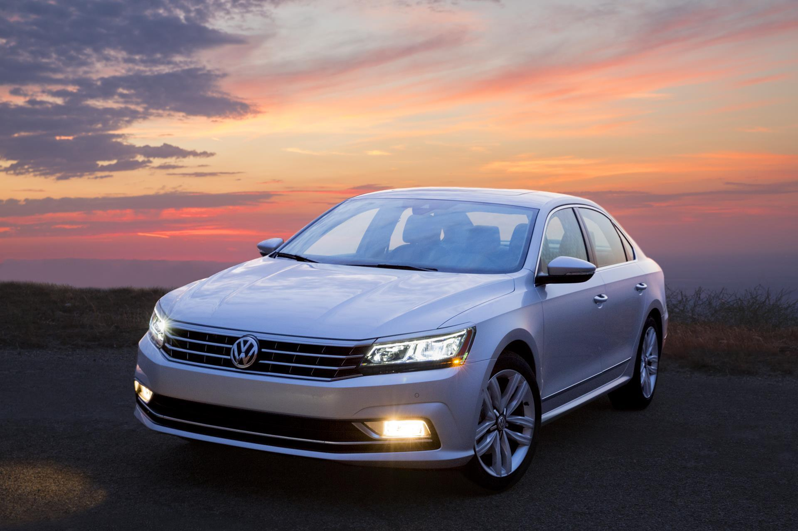
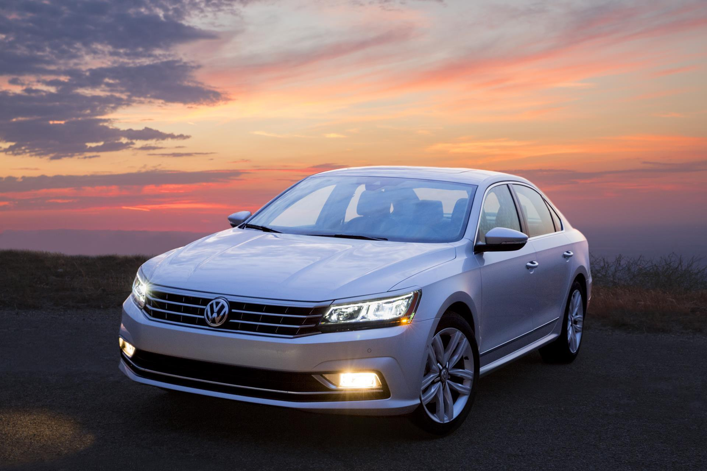
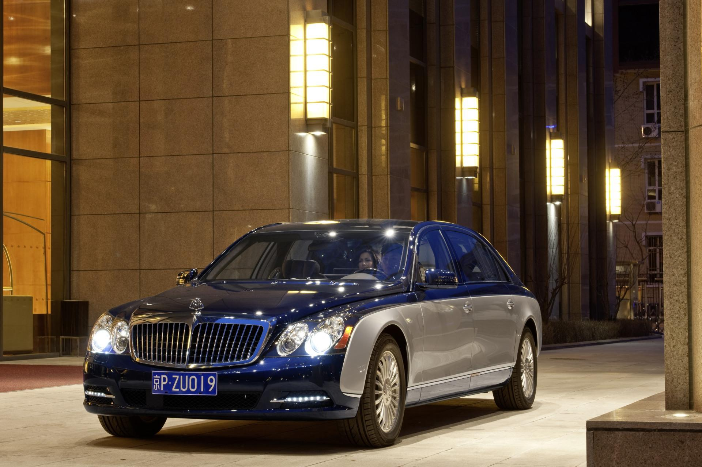
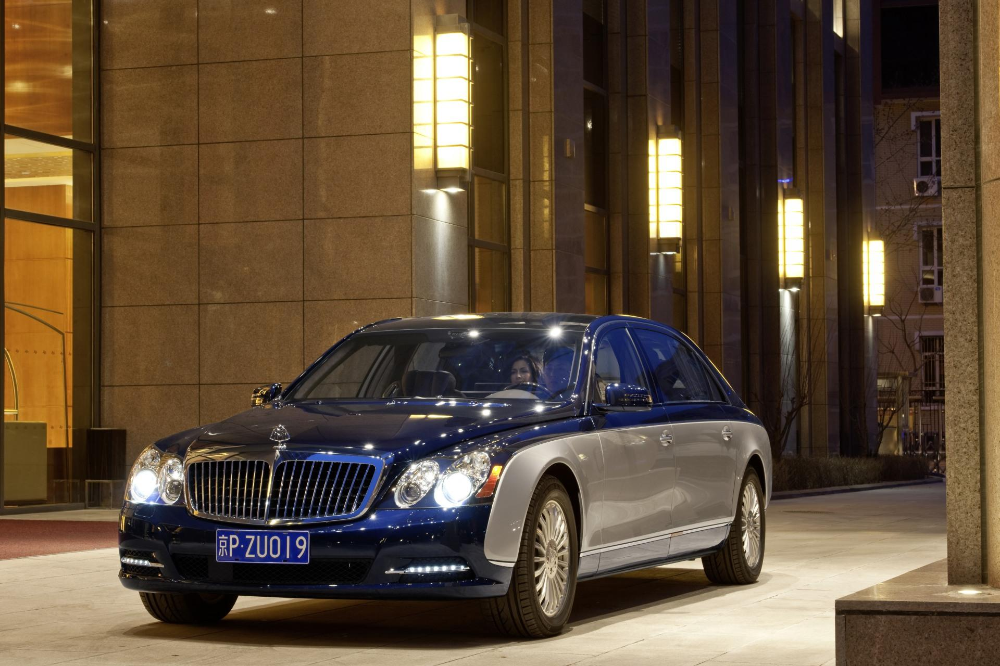
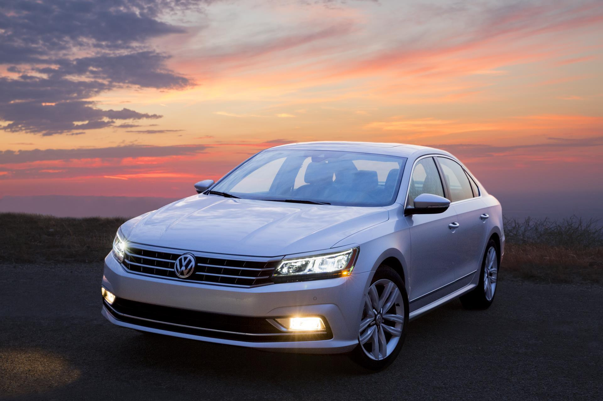
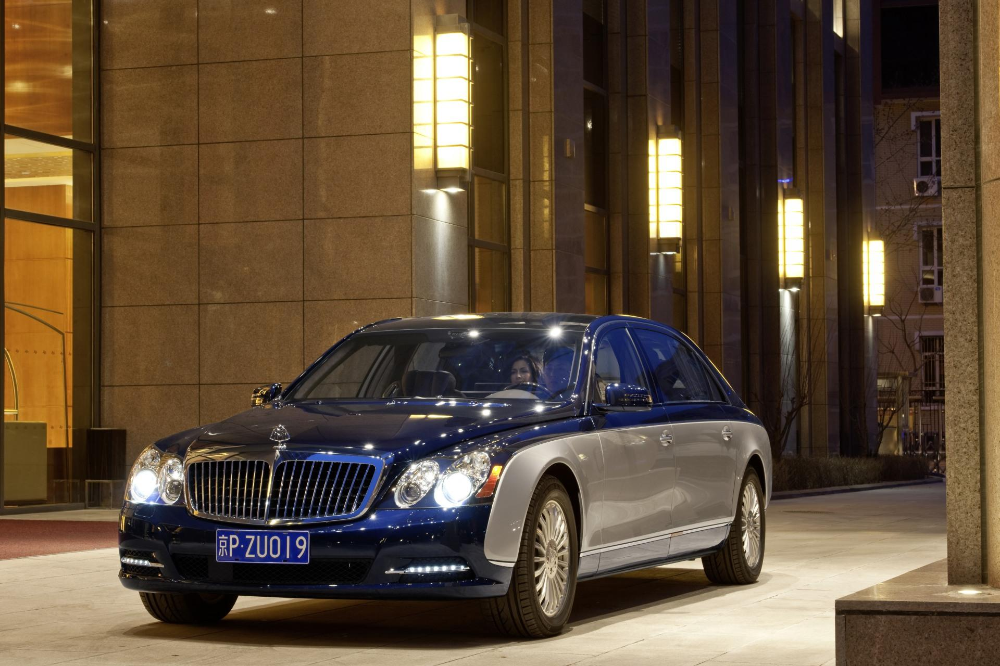

 

Мерседес Бенс
Фольксфаген
БМВ
Ауди
Опель
Порше
Майбах


Традиционные немецкое качество продукции давно стало своеобразным брендом, признанным во всем мире. Около ста лет немецкие машины считались лучшими наряду с транспортными средствами, производимыми в Японии и Соединенных Штатах. Секрет долговечности и феноменального успеха автомобилей из Германии кроется в особой скрупулёзности производителей, основанной на строгих стандартах и требованиях к качеству сборки и комфорту пассажиров авто.
Исторически автомобилестроение является одним из основных направлений немецкой экономики. Именно в Германии в 1861 году проходили испытания первого двигателя внутреннего сгорания под руководством его изобретателя Николауса Аугуса Отто. Одновременно инженер Карл Фридрих Михаэль Бенц работал над созданием первого
автомобиля, представляющего собой карету с двигателем малой мощности. Уже в 1900 году ему удалось организовать серийное производство машин. Спустя 25 лет в
сотрудничестве с талантливым инженером Готтлибом Даймлером было открыто целое предприятие, подарившее миру легендарную марку Mercedes Benz.
О ней и расскажем в первую очередь.
Где мы находимся?